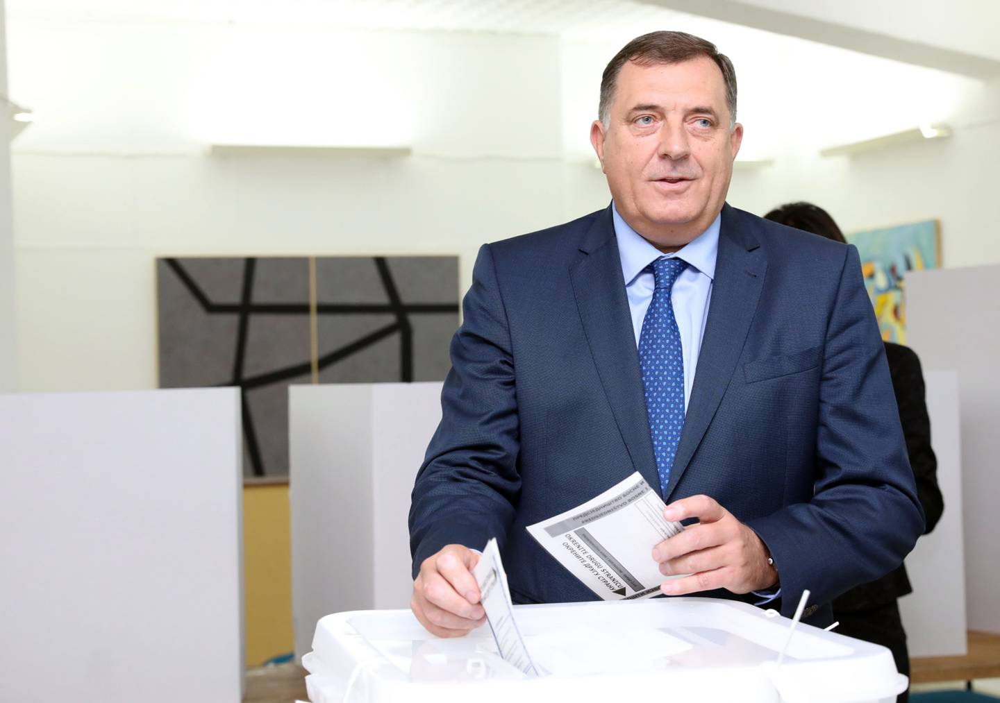
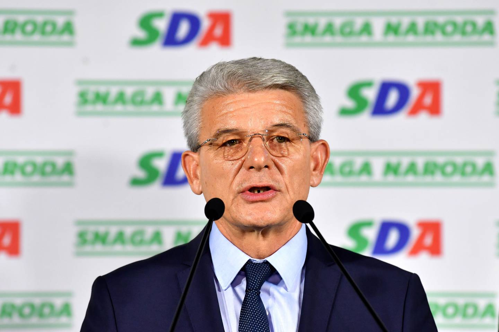

 Sarajevo. El nacionalista serbio Milorad Dodik, en la presidencia, tendrá que formar gobierno con un bosnio y un bosniocroata, un escenario que amenaza con una crisis política en un país que este lunes despertó con claras divisiones tras las elecciones generales del domingo.
"Serias turbulencias", "crisis inédita": los responsables políticos expresaron su temor incluso antes de que termine el conteo de los votos de las elecciones del domingo, previsto para este lunes. Bosnia-Herzegovina elegía la Presidencia tripartita, pero también las asambleas parlamentarias de un país con instituciones tan complejas que muchos consideran disfuncionales.
Estas elecciones parecen asestar un nuevo golpe a las instituciones creadas con los Acuerdos de Dayton que sellaron el fin del conflicto intercomunitario (1992-1995) que dejó unos 100.000 muertos y que dibujaron un país dividido en dos entidades ampliamente autónomas: la República Serbia de Bosnia (Republika Srpska) y una Federación de Bosnia-Herzegovina (croata- bosnia), reunidas en un Estado central.
Milorad Dodik, quien desdeñó siempre a las instituciones centrales, anunció que solo trabajaría “por el interés o en provecho de la Republika Srpska”, que dirige desde el 2006.
Su primera acción, dijo, será exigir la partida del alto representante de la comunidad internacional, que se supone debe garantizar la paz y la estabilidad, y de los miembros extranjeros de la Corte Constitucional. Explicó que se aseguraría “un apoyo de sus contactos diplomáticos”, evocando a Rusia adonde viajó para reunirse con el presidente Vladimir Putin durante la campaña. Hará “obstrucción, pero la Presidencia tiene poderes limitados. Podrá bloquear, pero no imponer decisiones”, expresó Florian Bieber, especialista de los Balcanes en la universidad de Graz (Austria). “Ya no puede ser un solista”, indicó el comentarista político de Sarajevo Ranko Mavrak.
 El serbio Dodik no representa a la única fuerza centrífuga. La derrota de su candidato, Dragan Covic, para la plaza croata en la Presidencia colegiada frente al socialdemócrata Zeljko Komsic, no perjudica la determinación del primer partido croata (HDZ, derecha nacionalista) en pedir una entidad propia para su comunidad.
En la federación que comparten, bosnios y croatas se limitan en general al candidato de su comunidad. Pero pueden legalmente designar a ambos aspirantes. Es lo que hicieron el domingo numerosos bosnios, que representan un 70% de la población de la federación: votaron por Zeljko Komsic, que defiende una “ciudadanía bosnia” que supere las divisiones.
Los bosnios “no pueden legítimamente escoger a los representantes croatas. Es un paso atrás”, denunció Dragan Covic, para quien la victoria de Komsic “amenaza con provocar una crisis inédita en Bosnia”. “Los bosnios eligieron nuevamente para los croatas: la derrota de Bosnia -Herzegovina”, tituló el periódico croata Vecernji List. El HDZ tiene cinco puntos de ventaja frente al Partido Socialdemócrata de Zeljo Komsic en las elecciones legislativas.